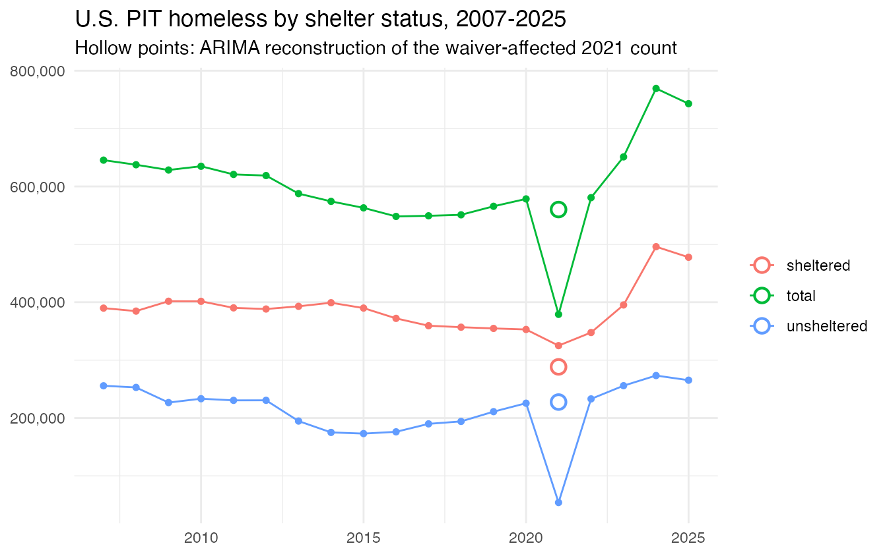
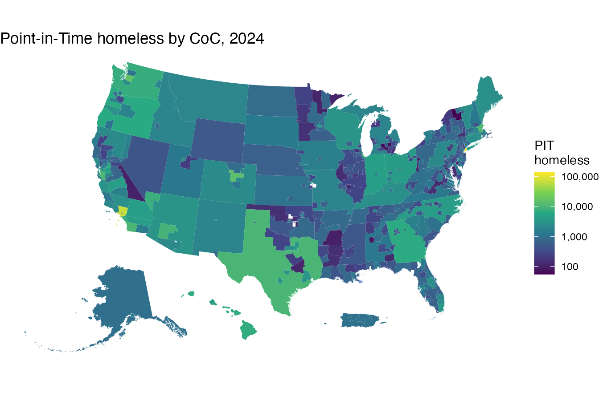
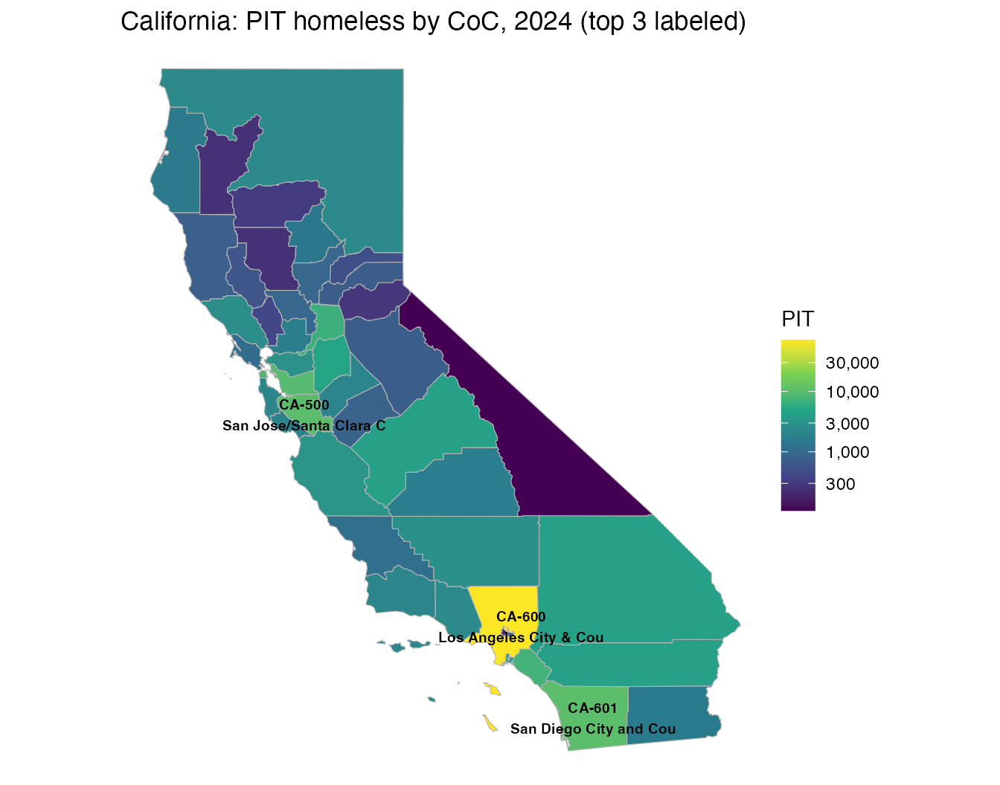
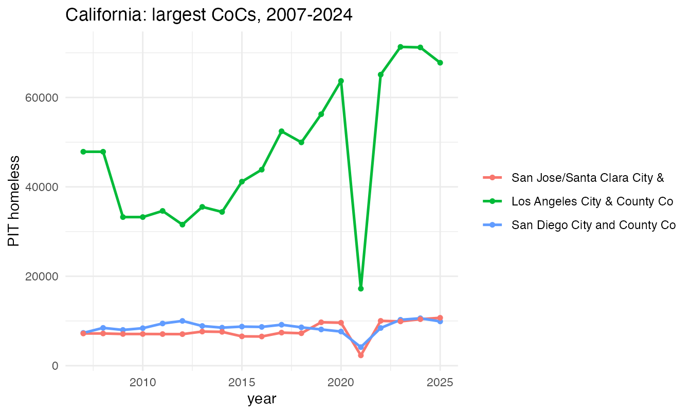
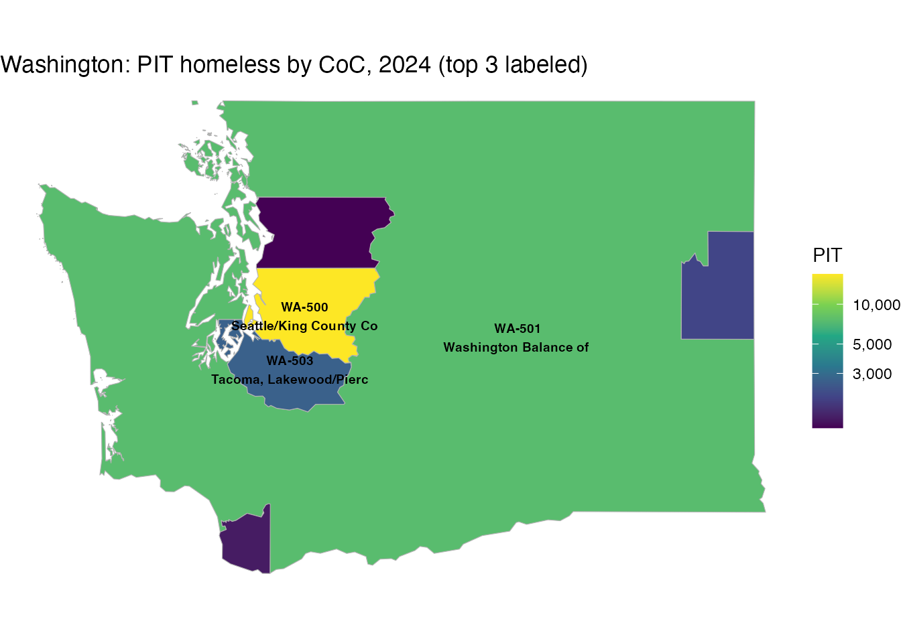
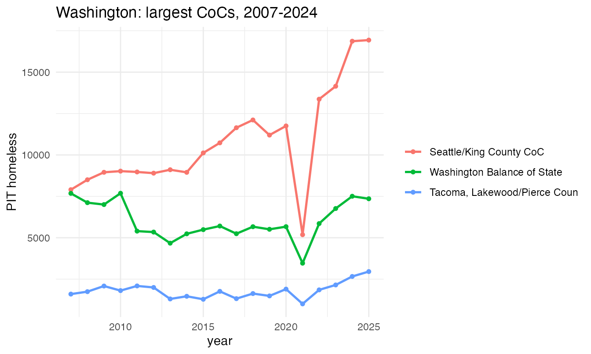

The hud2007–hud2024 data frames hold HUD’s
annual Point-in-Time (PIT) estimate of the total (“Overall Homeless”)
population for each Continuum of Care (CoC). The
coc2007–coc2024 objects hold the matching CoC
boundaries as sf polygons.
National totals over the full series:
years <- 2007:2025
totals <- sapply(years, function(y) sum(get(paste0("hud", y))$count))
plot(years, totals / 1e6, type = "b", pch = 19,
xlab = "Year", ylab = "Total PIT homeless (millions)",
main = "U.S. Point-in-Time homeless counts, 2007-2024")The 2021 dip reflects HUD’s pandemic waiver of the unsheltered count for many CoCs, not a real decline.
pit_us splits the national total into sheltered and
unsheltered counts. The 2021 unsheltered count collapsed because of the
waiver; the sheltered count held up. We treat 2021 as missing and
reconstruct it for each series with an ARIMA model (Kalman smoothing via
imputeTS::na_kalman), shown as hollow points.
library(ggplot2)
series <- c("total", "sheltered", "unsheltered")
yr <- pit_us$year
# ARIMA-impute the 2021 value of one series (2021 set to NA)
arima_2021 <- function(v) {
x <- v; x[yr == 2021] <- NA
as.numeric(imputeTS::na_kalman(ts(x, start = min(yr)), model = "auto.arima"))[yr == 2021]
}
obs <- do.call(rbind, lapply(series, function(s)
data.frame(year = yr, series = s, value = pit_us[[s]])))
imp <- data.frame(year = 2021, series = series,
value = vapply(series, function(s) arima_2021(pit_us[[s]]), numeric(1)))
ggplot(obs, aes(year, value, color = series)) +
geom_line() + geom_point(size = 1.3) +
geom_point(data = imp, shape = 21, fill = "white", size = 3.2, stroke = 1.1) +
scale_y_continuous(labels = scales::comma) +
labs(title = "U.S. PIT homeless by shelter status, 2007-2025",
subtitle = "Hollow points: ARIMA reconstruction of the waiver-affected 2021 count",
y = NULL, x = NULL, color = NULL) +
theme_minimal()
data.frame(series, observed_2021 = sapply(series, function(s) pit_us[[s]][yr == 2021]),
arima_2021 = round(imp$value))
#> series observed_2021 arima_2021
#> total total 379055 560133
#> sheltered sheltered 325027 288340
#> unsheltered unsheltered 54028 227548A national map of 2024, CoCs shaded by PIT count. Alaska and Hawaii
are repositioned with tigris::shift_geometry() for a
compact lower-48 layout:
library(sf); library(ggplot2); library(tigris)
#> Linking to GEOS 3.14.1, GDAL 3.12.3, PROJ 9.8.0; sf_use_s2() is TRUE
#> To enable caching of data, set `options(tigris_use_cache = TRUE)`
#> in your R script or .Rprofile.
# drop the far Pacific/Caribbean territories (shift_geometry only repositions
# AK/HI/PR) so the map stays centered on the lower 48 + insets
conus <- function(x) x[!x$ST %in% c("AS", "GU", "MP", "VI"), ]
m24 <- conus(merge(coc2024, hud2024, by.x = "COCNUM", by.y = "coc_num"))
m24s <- shift_geometry(m24)
ggplot(m24s) +
geom_sf(aes(fill = count), color = NA) +
scale_fill_viridis_c(trans = "log10", name = "PIT\nhomeless",
labels = scales::comma) +
labs(title = "Point-in-Time homeless by CoC, 2024") +
theme_void()
# the 3 largest CoCs in a state in 2024, and a short label for the map
top_cocs <- function(st, n = 3) {
s <- m24[m24$ST == st, ]
s <- s[order(-s$count), ][seq_len(n), ]
s$label <- paste0(s$COCNUM, "\n", substr(s$COCNAME, 1, 22))
s
}
# state map: all CoCs shaded by count, top 3 labeled by name
state_map <- function(st, title) {
s <- m24[m24$ST == st, ]
tp <- top_cocs(st)
ggplot(s) +
geom_sf(aes(fill = count), color = "grey70") +
geom_sf_text(data = tp, aes(label = label), size = 2.6, fontface = "bold") +
scale_fill_viridis_c(trans = "log10", name = "PIT", labels = scales::comma) +
labs(title = title) + theme_void()
}
# per-CoC time series 2007-2024 for a set of CoC numbers
coc_series <- function(coc_nums) {
do.call(rbind, lapply(coc_nums, function(cc) data.frame(
year = years, COCNUM = cc,
count = sapply(years, function(y) {
d <- get(paste0("hud", y)); v <- d$count[d$coc_num == cc]
if (length(v)) v else NA_real_ }))))
}
state_map("CA", "California: PIT homeless by CoC, 2024 (top 3 labeled)")
#> Warning in st_point_on_surface.sfc(sf::st_zm(x)): st_point_on_surface may not
#> give correct results for longitude/latitude data
Year-by-year trend for California’s three largest CoCs:
ca_top <- top_cocs("CA")
ggplot(coc_series(ca_top$COCNUM), aes(year, count, color = COCNUM)) +
geom_line(linewidth = 0.9) + geom_point(size = 1.3) +
scale_color_discrete(labels = setNames(substr(ca_top$COCNAME, 1, 28), ca_top$COCNUM)) +
labs(title = "California: largest CoCs, 2007-2024", y = "PIT homeless",
color = NULL) + theme_minimal()
state_map("WA", "Washington: PIT homeless by CoC, 2024 (top 3 labeled)")
#> Warning in st_point_on_surface.sfc(sf::st_zm(x)): st_point_on_surface may not
#> give correct results for longitude/latitude data
Year-by-year trend for Washington’s three largest CoCs:
wa_top <- top_cocs("WA")
ggplot(coc_series(wa_top$COCNUM), aes(year, count, color = COCNUM)) +
geom_line(linewidth = 0.9) + geom_point(size = 1.3) +
scale_color_discrete(labels = setNames(substr(wa_top$COCNAME, 1, 28), wa_top$COCNUM)) +
labs(title = "Washington: largest CoCs, 2007-2024", y = "PIT homeless",
color = NULL) + theme_minimal()
CoCs merge and are renumbered over time; use coc_mergers
to follow a CoC through a merger (see ?coc_mergers).